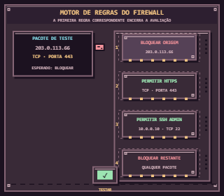
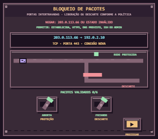
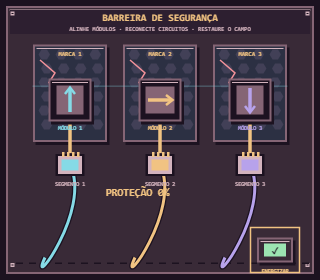
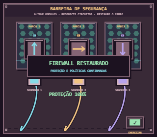
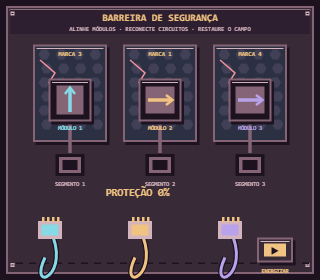
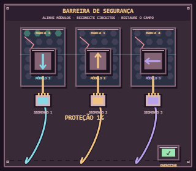
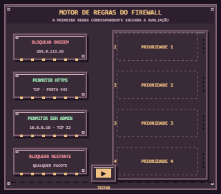
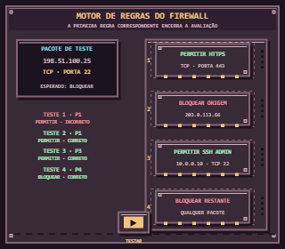
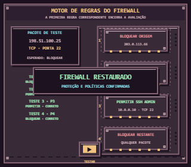

Motor de regras do firewall · inicialMotor de regras do firewall - regra ampla antes do bloqueio

Motor de regras do firewall · em operaçãoMotor de regras do firewall · concluído

Bloqueio de pacotes · inicialBloqueio de pacotes · em operaçãoBloqueio de pacotes · concluídoBarreira de segurança · inicial

Barreira de segurança · em operação

Barreira de segurança · concluído

Barreira de segurança · inicial

Barreira de segurança · em operaçãoBarreira de segurança · concluído

Motor de regras do firewall · inicial

Motor de regras do firewall - regra ampla antes do bloqueioMotor de regras do firewall · em operação

Motor de regras do firewall · concluídoScanner de ameaças · inicialScanner de ameaças - assinatura e integridadeScanner de ameaças · em operaçãoScanner de ameaças · concluídoBloqueio de pacotes · inicial